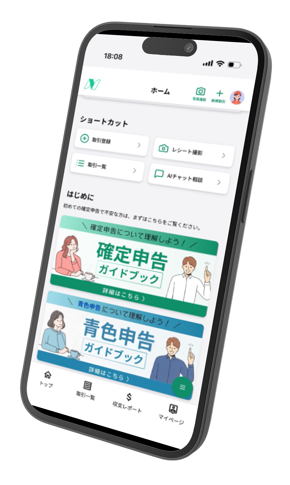

撮るだけで
AIが自動読み取り
レシートや領収書をスマホで撮影するだけで、AIが店名・日付・金額などを自動で読み取り。
内容は画面で確認・修正してから保存できます。
フリーランス・個人事業主・確定申告が初めての方へ
領収書を撮るだけで、AIが自動で記帳。
確定申告に必要な書類まで、もっとスムーズに。

これらの悩みや面倒な申告手続きまで丸ごと全て
が解決いたします！！
※難しい基礎知識も覚える必要はありません。
レシートや領収書をスマホで撮影するだけで、AIが店名・日付・金額などを自動で読み取り。
内容は画面で確認・修正してから保存できます。
読み取ったデータをもとに、AIが勘定科目まで自動で仕分け。
手入力の手間を抑えながら、日々の記帳を無理なく続けられます。
利用者は「売上＆経費データ」を送るだけで、必要な書類を全自動で作成。
源泉徴収票・領収書・請求書などの整理も代行。
毎月の収支データをもとに、確定申告が必要か自動判定。
「あなたは確定申告が必要です！」と通知が来るから、迷わず行動できる。
STEP01
公式ウェブサイトまたはアプリから会計代行サービスに申し込みます。
必要な情報（会社名、連絡先、事業内容など）を入力し、簡単なプロフィールを登録します。
STEP02
登録完了後に必要な書類（法人登記簿、決算書、請求書等）を指定された方法で提出します。
これにより、担当者がサービスを開始するために必要な情報を収集します。
STEP03
すべての書類が確認されると、会計代行サービスが開始され、税務・会計業務がスムーズに進行します。
お客様は進捗をオンラインで確認し、必要に応じてサポートを受けることができます。
無申告のままでは、一時的に税金を支払わずに済むように思えますが、結果的に本来より多くの税金を支払うリスクがあります。
無申告が発覚すると、無申告加算税や延滞税などのペナルティが課され、悪質な場合は刑事罰の対象となることもあります。
これにより、大きな 金銭的損失 や 信用問題 につながる可能性があります。
無申告が疑われる場合、税務調査の対象になることがあります。
特に取引先が経費計上した記録などから、税務署が反面調査を行い、無申告が発覚するケースがあります。
適切な確定申告を行うことで、余計な税負担や罰則を回避し、経済的なリスクを減らすことができます。
現金手渡しの収入も所得として認識され、所得税の対象となる。
夜職の方は雇用契約か業務委託契約かで所得区分が異なり、確定申告または年末調整が必要。
接待などで得た現金もタクシー代等の名目に関わらず、所得とみなされ課税対象となる。
経費は事業に直接関連する支出のみ が対象で、プライベートの支出は認められない。
証明書類（領収書・レシート・請求書等）の適切な保管が重要。
高額な経費よりも、カフェ代など少額の経費を積み重ねることが節税につながる。
仕事の合間に
あれこれ準備したり
基礎知識覚えたり
するのって結構大変...
これらのお困り事や実際の申告までを丸ごと全て
にお任せください！！
※難しい基礎知識も覚える必要はありません。
| 項目 | 具体例 |
|---|---|
| 交際費 | 取引先との接待や贈答 |
| 会議費 | 会議を目的とした支出（1人10,000円以下） |
| 旅費交通費 | 事業上必要な旅費や交通費 |
| 外注費 | 業務委託費用 |
| 通信費 | インターネット利用料、郵送費 |
| 広告宣伝費 | 名刺代、チラシ、パンフレット、ホームページ |
| 項目 | 具体例 |
|---|---|
| 衣装代 | お店で着る衣装代やドレス代、ヌーブラ、コスプレ、ストール |
| 通勤費 | 自宅とお店までの交通費として電車代やタクシー代 |
| 通信費 | スマートフォン本体代、インターネット利用料、電話代 |
| 小物代 | ハンカチ、ライター、バッグ、名刺入れなど |
| 自宅家賃 | 賃貸借契約している賃料 |
| 美容整形代 | 美容院でのエステや脱毛、ネイル |
| 名刺代 | 名刺作成費用 |
| 書籍や新聞代 | 自分磨きに関連した本の購入費やサブスク料 |
| 交際費 | 同伴やアフターなど、お客さんとのご飯代のうち支払った分やお客さんへのプレゼント代 |
| 税理士費用 | 税理士への顧問料や確定申告費用 |
| 記帳代行料 | 領収書や通帳のコピーなどの取引記録の代行料 |
| 雑費 | ヘアセット代 |
| アクセサリー | かばん、靴、バッグ、ネックレスなどアクセサリー類 |
| ジム代 | トレーニングジム代 |
| その他 | お仕事に関連する出費 |
従業員50名以下の企業・個人事業主は、ご登録後すぐに製品をお試しいただけます。
貴社のご状況にあった製品や導入スケジュールを担当者がご案内いたします。
従業員51名以上の企業は、担当者が詳細をお伺いして最適なプランをご提案します。